1903
Wright Flyer
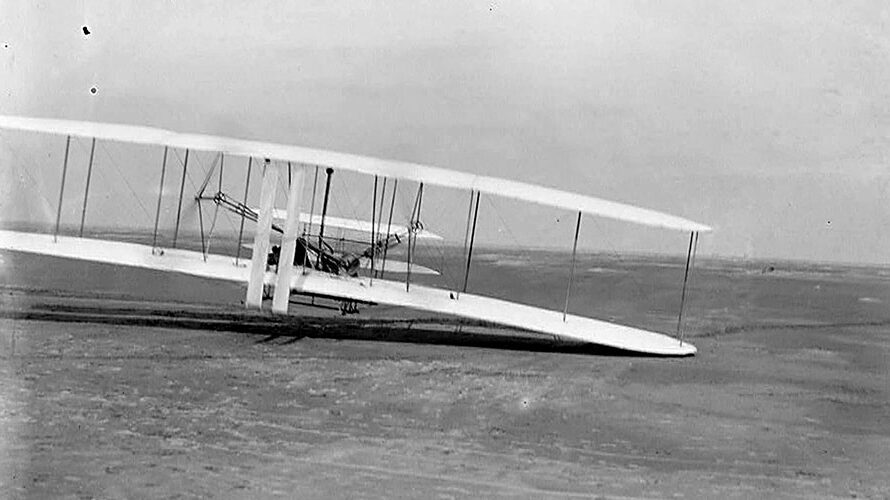
De eerste succesvolle gemotoriseerde vlucht werd uitgevoerd door Orville en Wilbur Wright.
1909
Wright Company
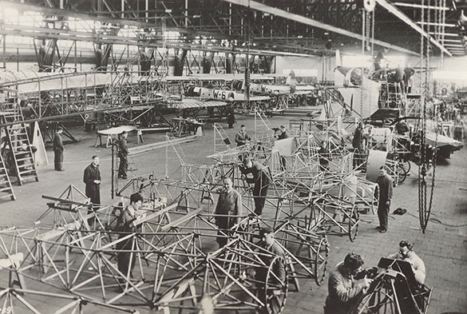
De gebroeders Wright richtten hun eerste vliegtuigbedrijf op voor commerciële productie.
1915
Junkers J 1

Het eerste volledig metalen vliegtuig betekende een grote technologische doorbraak.
1919
Eerste Trans-Atlantische Vlucht
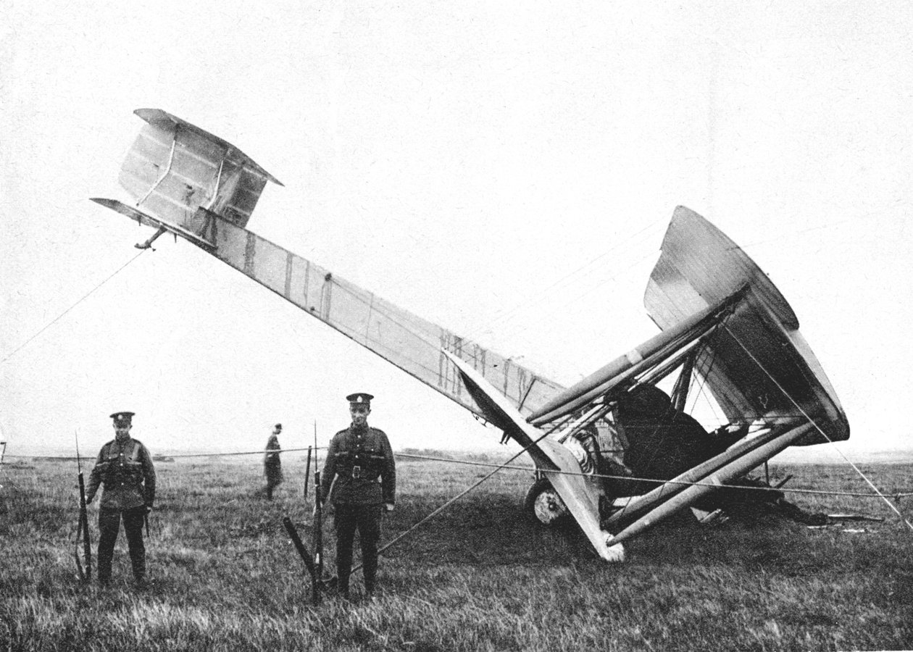
Alcock en Brown maakten de eerste non-stop vlucht over de Atlantische Oceaan.
1927
Spirit of St. Louis
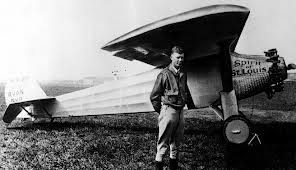
Charles Lindbergh vloog solo van New York naar Parijs over de Atlantische Oceaan.
1935
Douglas DC-3
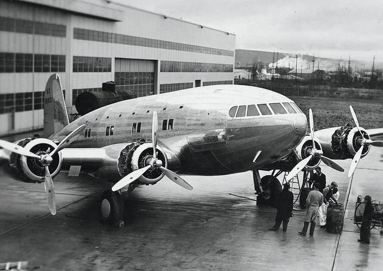
De DC-3 maakte commerciële luchtvaart betrouwbaar, snel en betaalbaar.
1939
Heinkel He 178
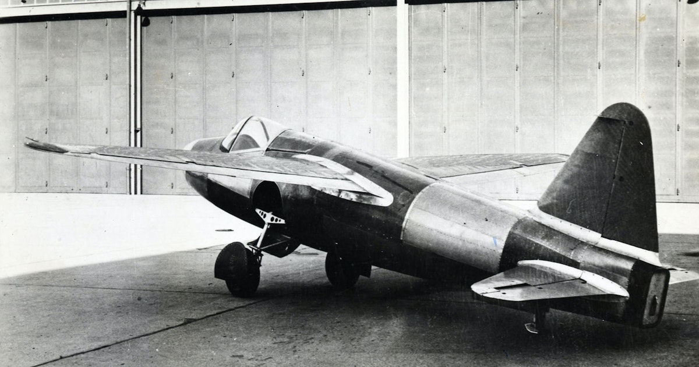
Het eerste vliegtuig dat volledig werd aangedreven door een straalmotor.
1947
Bell X-1
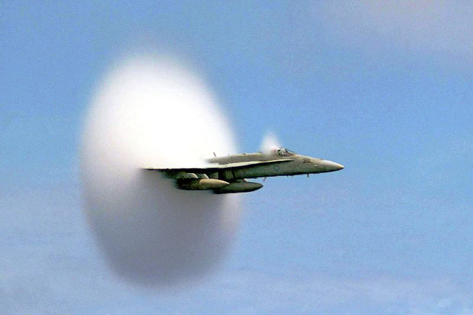
Chuck Yeager doorbrak als eerste piloot de geluidsbarrière.
1952
de Havilland Comet
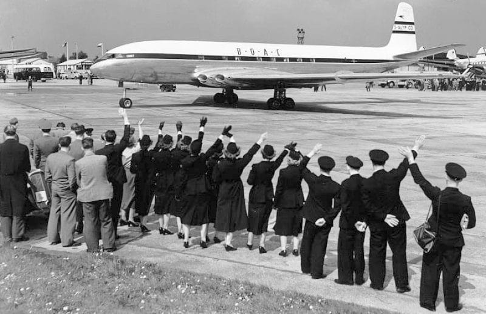
Het eerste commerciële straalvliegtuig trad in dienst voor passagiersvervoer.
1969
Boeing 747
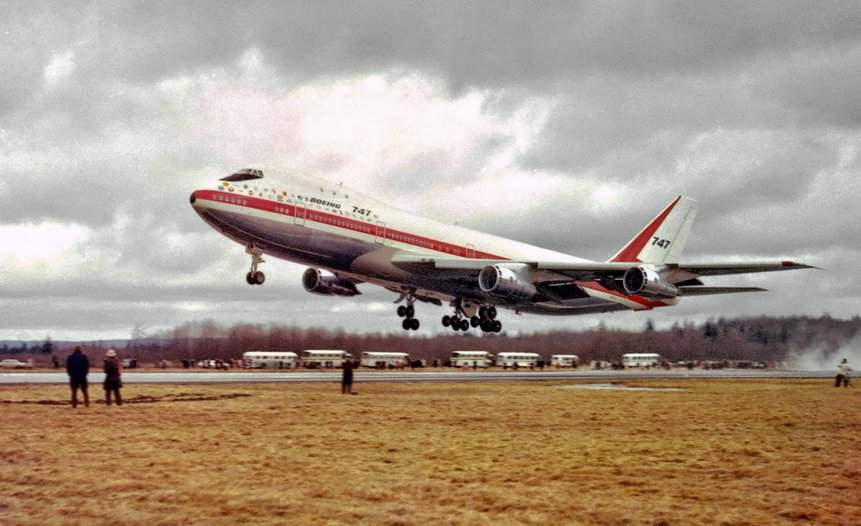
De Jumbo Jet veranderde internationaal luchtverkeer voorgoed.
1976
Concorde
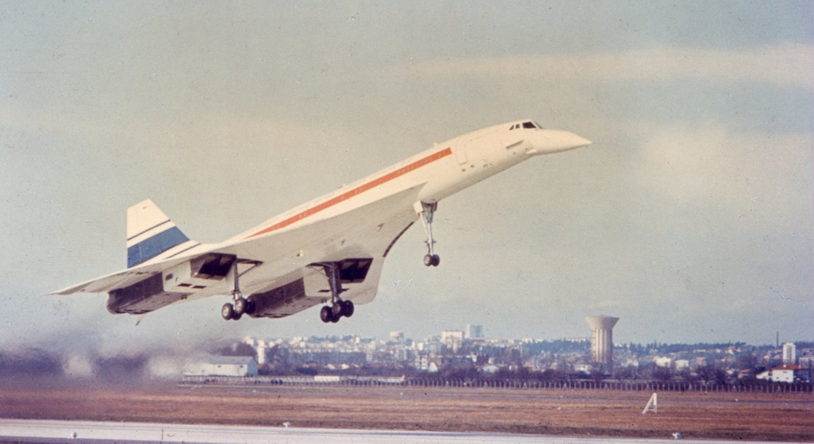
Supersonische passagiersvluchten maakten reizen sneller dan ooit tevoren.
1988
Antonov An-225
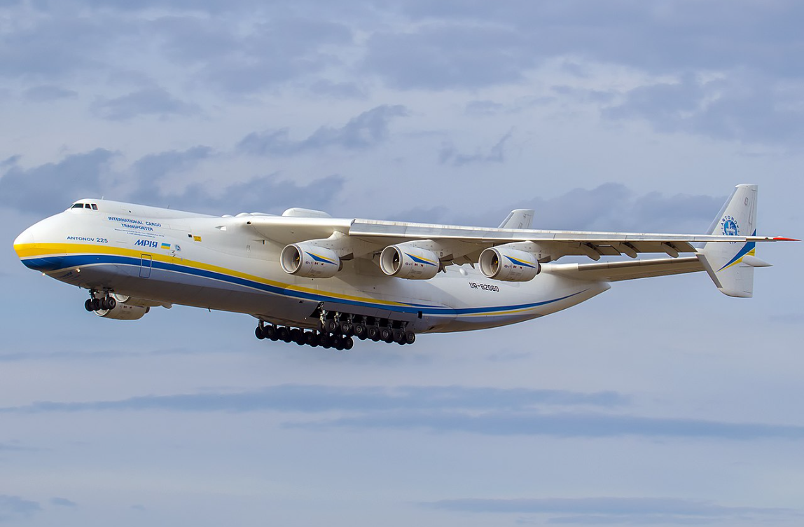
Het grootste transportvliegtuig ter wereld maakte zijn eerste vlucht.
2005
Airbus A380
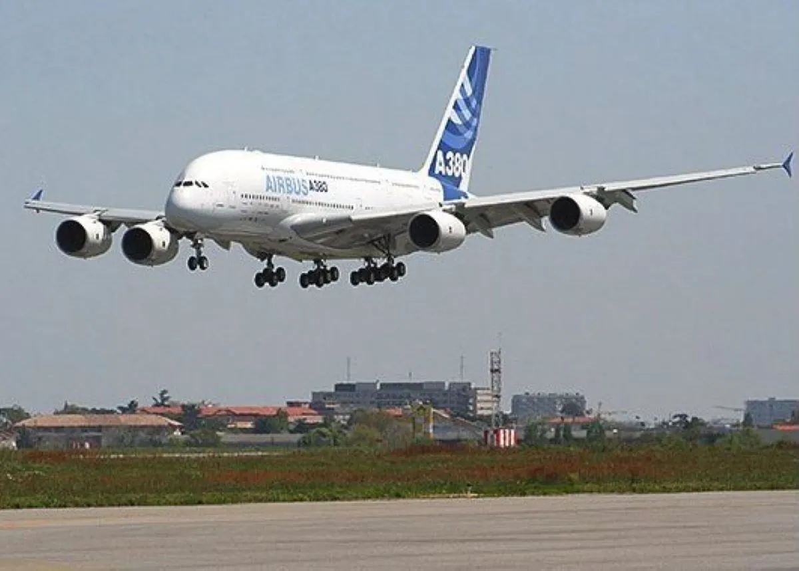
Het grootste passagiersvliegtuig ooit gebouwd steeg voor het eerst op.
2009
Boeing 787 Dreamliner
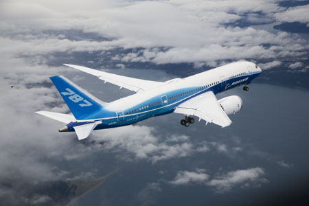
Een nieuwe generatie zuinige vliegtuigen met lichte composietmaterialen.
2020
Boeing 777X
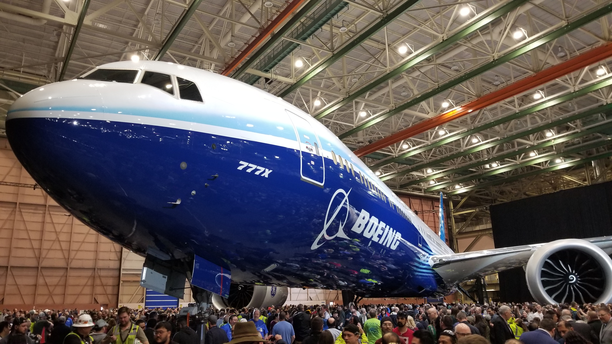
De nieuwste generatie langeafstandsvliegtuigen met geavanceerde technologie.